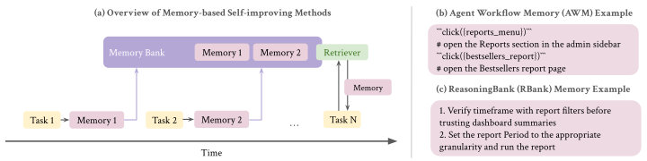
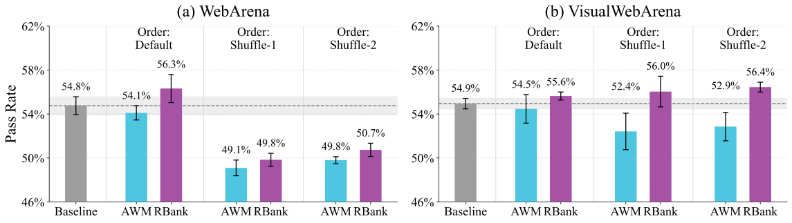

On the Fragility of Self-Improving Agents: Variance, Task Order, and Underspecification
Paper: arXiv 2608.18066 (v1, Aug 2026), by Qinyuan Ye, Yu Li, Yada Pruksachatkun, Jiaxin Zhang, Chien-Sheng Wu — Salesforce AI Research (repo: SalesforceAIResearch/self-improve-fragility). Grounded in the full arXiv HTML text.
TL;DR
- A re-evaluation of two flagship memory-based self-improving agents — Agent Workflow Memory (AWM) and ReasoningBank (RBank) — on WebArena, VisualWebArena, and SCUBA, broadening evaluation along exactly two axes prior work skipped: multiple runs (3 identical runs, reporting std and best–worst gap) and randomly shuffled task orders. Both axes hurt, badly.
- Self-improvement amplifies evaluation noise (variance up in 17/24 cases, >50% relative increase in 11; best–worst gaps up to 8.3% within a single method) because memory makes runs stateful — early stochasticity compounds into divergent memory banks. And the "default" task order is an implicit easy-to-hard curriculum: shuffle it and performance degrades in 6/8 cases, often below the no-memory baseline (WebArena 54.8 → 49.1 with AWM under Shuffle-1). With a strong GPT-5-mini baseline, headline gains shrink to insignificance (RBank +1.5, p = 0.23).
- Root-cause analysis blames underspecification: memories about API calls and "ask the user" in an environment that supports neither, and a contagious Haversine-formula fallback in Map tasks that got reinforced because it occasionally scored. Adding rubrics, environment feedback, and prompt constraints to memory construction recovers +2.9 points — but still leaves the agent below no-memory under shuffled orders.
Why this matters
Your self-improving category is full of papers reporting that a textual memory/skill loop adds N points on WebArena-style benchmarks from a single run under the benchmark's default task order. This paper is the methodological audit of that entire evidence base, and its two findings compose into an uncomfortable syllogism: (1) single-run deltas on these benchmarks are within noise that the self-improvement loop itself widens (a stateful loop turns sampling noise into divergent memory banks — std up to 3.9%, best–worst gap up to 8.3%); (2) the default task ordering is a hidden curriculum (task IDs correlate with difficulty because annotators wrote easy tasks first), and much of the reported gain was riding on it. A method that only self-improves when tasks arrive easy-to-hard hasn't learned to self-improve; it's been handed a curriculum no deployed agent will get.
The third finding is quieter but strategically the most important: with a strong baseline (GPT-5-mini agent at 54.8% WebArena — above RBank's memory-enhanced Gemini-2.5-Pro result of 53.9%, and at VWA leaderboard level), the same methods that helped weak 2025-era agents deliver statistically insignificant gains. Self-improvement methods were validated in a regime the frontier has already left. Notably, the authors even gave the memory constructor the ground-truth reward rather than the noisy LLM-judge proxy used in the original works — a generosity that makes the negative results stronger.
The core idea
The setting under audit: an agent works through an online stream of \(N\) tasks \(\mathcal{Q}=\{q_{0},q_{1},\dots,q_{N}\}\) while maintaining a textual memory \(\mathcal{M}\); at each step the action is sampled conditioned on the memory,
with a terminal reward \(r\in[0,1]\), after which a construction module \(C\) updates \(\mathcal{M}\) from the trajectory (AWM: distill reusable workflows from successes, all workflows in-context; RBank: reasoning traces/insights from successes and failures, retrieved per task). Nothing in the method is changed — only the evaluation is widened:
- Variance axis: 3 identical runs; report per-domain std of pass@1 and the best–worst gap (reconstruction of the paper's metrics in symbols: \(\sigma\big(\{\text{pass@1}^{(i)}\}_{i=1}^{3}\big)\) and \(\max_i - \min_i\)).
- Order axis: default order vs. two random shuffles (Shuffle-1, Shuffle-2) of the same tasks.

Figure 1 from the paper: the audited loop — task stream, memory construction, memory-conditioned policy — and the two representative methods, AWM and ReasoningBank.How it works
The re-evaluation harness: baseline (no-memory) agents from prior work for WebArena/VisualWebArena and SCUBA, GPT-5-mini as both agent backbone and memory-construction model, AWM and RBank layered on top with their original algorithms intact. Benchmarks: WebArena (812 web tasks, 6 domains), VisualWebArena (910 tasks, 3 domains), SCUBA (267 enterprise CRM admin/sales/service tasks after pruning stale ones).
# The audit protocol (condensed from §3)
for method in {Baseline, AWM, RBank}:
for order in {Default, Shuffle-1, Shuffle-2}: # order axis
for run in 1..3: # variance axis
M = {} # fresh memory bank
for task q_i in order:
trajectory = run_agent(GPT-5-mini, q_i; M)
r = ground_truth_reward(q_i, trajectory) # NOT an LLM-judge proxy
M = construct_memory(M, trajectory, r) # AWM / RBank, unchanged
record per-domain pass@1
report mean, std, best-worst gap; compare orders
# then: manually inspect memory banks -> underspecification taxonomy
# then: re-run RBank with +Rubrics / +EnvFeedback / +PromptMod / +All
The forensic step is what separates this from a pure negative-results paper. Manual inspection of RBank's memory banks surfaces three failure modes, all forms of underspecification — the memory constructor doesn't know what the environment actually supports or what the task actually wanted:
- Environment underspecification: recurring memories recommending API-based solutions (unsupported — the constructor was never told) and "ask the user for confirmation" (26 mentions across 3 WebArena runs; can strand the agent issuing
waituntil timeout). - Task underspecification: ambiguous queries ("I have jaw bruxism… show me something that could alleviate the problem") get literal interpretations, failures, then irrelevant reflective memories ("gather patient details before giving medical guidance"); evaluator bugs create false negatives that seed spurious memories.
- Contagious memories: in Map tasks, a stochastically-discovered Haversine-formula fallback (used when the route engine timed out) occasionally scored, entered memory, and was then retrieved with increasing frequency — the earlier it entered, the more it spread. Run-to-run variance, mechanized.
The mitigation experiment feeds the constructor what it was missing: +Rub (the task's actual grading rubrics, post-hoc only), +Env (action-level environment feedback like click failures), +PMod (a prompt edit banning API/confirmation strategies and steering toward procedural, site-navigation knowledge), and +All.
Results
- Baselines are noisy on their own: no-memory best–worst gaps reach 4.4% (WebArena GitLab), 2.4% (VWA), 6.7% (SCUBA) — already larger than many published "improvements" from single runs.
- Self-improvement widens the noise: variance up in 17/24 domain cases (11 with >50% relative increase); RBank hits std 3.89 on Map (+200%) and 4.28 on Multisite (+336%), with best–worst gaps of 8.26 and 10.42; AWM +600% std on SCUBA Admin. Stateful loops compound early randomness into different memory banks, hence different agents.
- Against a strong baseline, gains evaporate: WebArena — baseline 54.8, AWM 54.1 (−0.7), RBank 56.3 (+1.5, p = 0.23 by unpaired t-test over runs); VWA — 54.9 vs 54.5 / 55.6; SCUBA — 49.6 vs 50.1 / 51.1. For context: this GPT-5-mini baseline alone (55.3 on RBank's 684-task subset) beats RBank's published memory-enhanced Gemini-2.5-Pro number (53.9).
- Task order was load-bearing: the default order's moving-average pass rate starts ~75% and sinks below 40% past task 150 — an implicit curriculum from benchmark construction. Under shuffles, performance degrades significantly in 6/8 method-order cases; WebArena drops 54.8 → 49.1 (AWM) and 49.8 (RBank) under Shuffle-1 — below the no-memory baseline, meaning the self-improvement loop did net damage under realistic task arrival.

Figure 3 from the paper: same tasks, same methods, different arrival order — the gains invert.- Better specification helps but doesn't rescue: under Shuffle-1, each of +Rub/+Env/+PMod adds modestly; +All lifts RBank 49.8 → 52.7 (+2.9), +1.1 on Shuffle-2, no harm on Default. But even +All stays below the 54.8 no-memory baseline under both shuffles — underspecification is a cause of fragility, not the whole story; the residual is unidentified.
How it connects
- harness-continual-learning (tutorial, same week) — the constructive counterpart: HCL's anchor-gated commits (rerun past cases, reject candidates that break them) is exactly the machinery that would catch a contagious Haversine memory or an API-hallucinating insight before it enters the persistent bank. This paper supplies the empirical case that ungated memory accumulation is net-harmful under distribution shift; HCL supplies the gate. Neither cites the other; run the cross-experiment.
- envharness-envrigger (tutorial, same week) — EnvHarness's skill-learning gains flow through ReasoningBank-style extraction on WebArena among others; this paper says exactly those numbers need multi-run, shuffled-order stress tests (EnvHarness does report 3-run stds, but default orders).
- reliable-self-evolving-agents / rethinking-self-evolving-skills — the same skepticism aimed at skill libraries; this paper is the strongest version because it holds the methods fixed and only widens the evaluation, isolating the fragility to the loop itself rather than to any implementation detail.
- SkillMisevo-Gym (tracked item) — the safety mirror image of the Haversine finding: there, unsafe experience persists as skills and triggers in clean sessions; here, merely unintended experience does the same. Both argue the persistent store is where agent behavior actually lives, and where auditing should happen.
- agent-memory-second-half / msce-memory-to-skills — the memory-design literature this audit puts on notice: construction modules need environment contracts, task rubrics, and feedback plumbed in (+Rub/+Env/+PMod are a first pass), not just better summarization prompts.
Critical take
The paper's own scope limits are worth keeping in view before generalizing the obituary. It audits two methods, one domain family (web/GUI navigation), one backbone (GPT-5-mini) — self-improvement loops on coding or math agents, where verifiers are crisper and tasks less ambiguous, may not inherit the underspecification pathology (the Haversine story is really a story about a flaky route engine and a lenient string-match evaluator). Three runs is also thin for the variance claims — enough to show instability exists, not to estimate it well; the p = 0.23 on RBank's +1.5 cuts both ways (the study is underpowered to rule out a modest real gain). And the strong-baseline finding, while true, partially conflates two things: methods designed to compensate for weak policies naturally have less headroom on strong ones; diminishing gains are not the same as fragility. What survives all caveats, though, is the task-order result — a self-improvement method that underperforms its own no-memory baseline when tasks arrive in random order is failing at the one thing "self-improving" promises, and no amount of benchmark-default-order reporting should be accepted in this literature again. The evaluation protocol here (≥3 runs, ≥2 shuffled orders, report std and best–worst gap) is cheap and should just become the standard.
If you remember three things
- Stateful loops amplify noise: memory-based self-improvement increased run variance in 17/24 cases (best–worst gaps to 8–10%), because early stochastic choices compound into divergent memory banks — single-run evaluations of self-improving agents are close to meaningless.
- The default task order was doing the improving: benchmark orderings are implicit easy-to-hard curricula; under random shuffles AWM/RBank degrade in 6/8 cases and can fall below the no-memory baseline (54.8 → 49.1 on WebArena) — with ground-truth rewards generously provided.
- Underspecification is the diagnosed mechanism, partially fixable: memories about unsupported actions (APIs, user confirmation) and contagious accidental strategies (Haversine) arise because the constructor never sees environment contracts or rubrics; adding them (+All) recovers +2.9 points but still doesn't beat no-memory under shuffle — gate your memory commits, and stress-test the loop before trusting it.